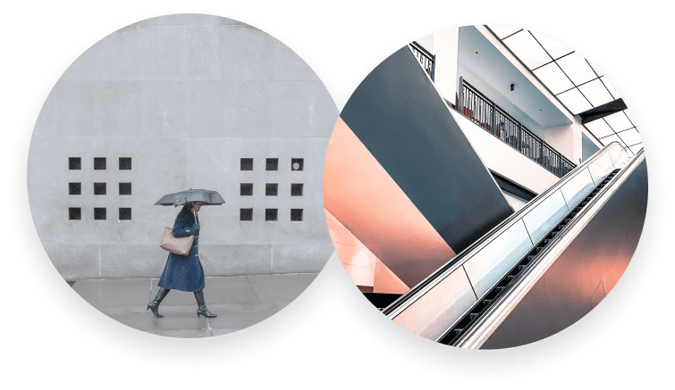
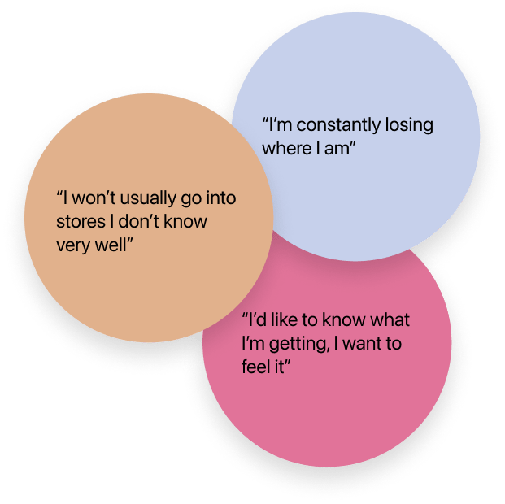
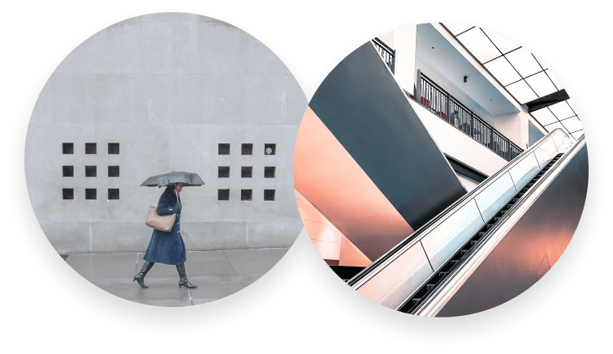
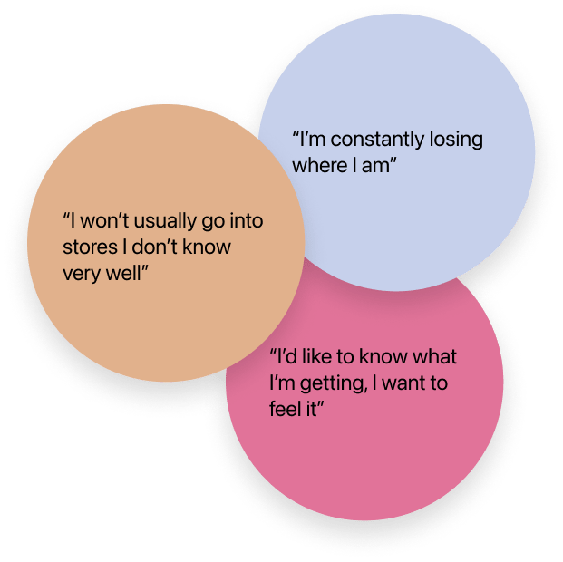

Compass
Role: UX | UI Designer
Timeline: 10 weeks
Tools: Figma, Illustrator
 




Pain Points
- Navigation diagrams
- Crowds
- Lack of clear retail floor plan
Motivation
- Quality products
- Touching and feeling products
Behaviour
- Speeds through retail space
- Compares online prices to retail prices